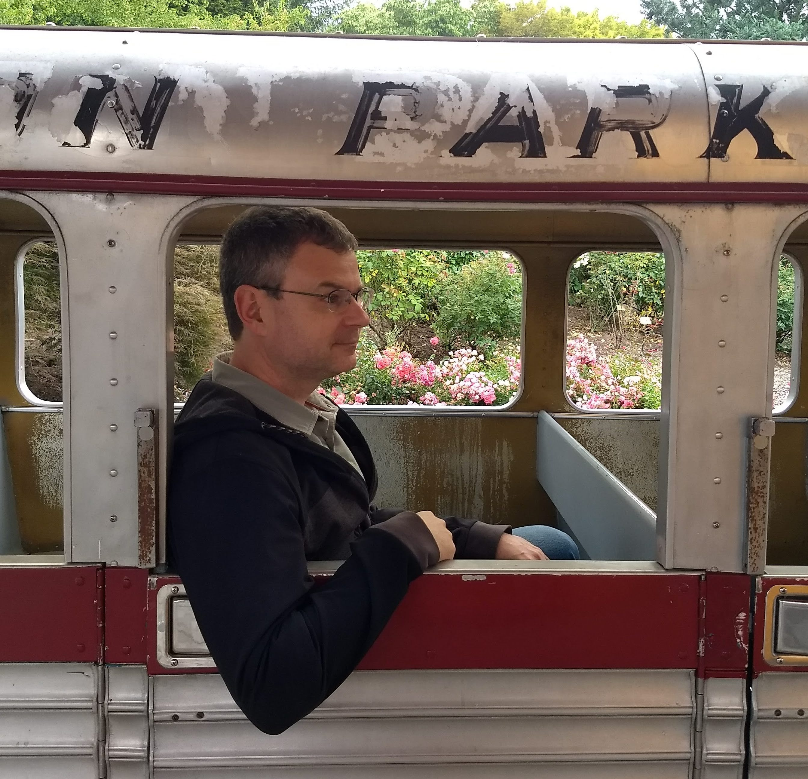

Brian Roark
Contact Info:
Google, Inc., 309 SW 6th Ave. suite 400, Portland OR 97204
roarkbr AT SYMBOL g m a i l DOT c o m
I am a computational linguist working on various topics in natural language processing. My research interests include: syntactic parsing of text and speech; language modeling for automatic speech recognition and other applications; supervised and unsupervised learning of language and parsing models; text entry, accessibility and augmentative & alternative communication (AAC); probabilistic models of human language processing; and spoken language processing for diagnosis of neurodevelopmental and neurodegenerative disorders.
Here's a Google Research blog post about some work I was involved in, to provide transliteration keyboards in 20+ South Asian languages.
A few recent papers:
- Hao Zhang, Richard Sproat, Axel H. Ng, Felix Stahlberg, Xiaochang Peng, Kyle Gorman and Brian Roark. 2019. Neural Models of Text Normalization for Speech Applications. To appear in Computational Linguistics, 45(2).
- Ryan Cotterell, Sebastian J. Mielke, Jason Eisner and Brian Roark. 2018. Are All Languages Equally Hard to Language-Model? In Proceedings of the 2018 Conference of the North American Chapter of the Association for Computational Linguistics (NAACL), pp. 536-541.
- Lars Hellsten, Brian Roark, Prasoon Goyal, Cyril Allauzen, Françoise Beaufays, Tom Ouyang, Michael Riley and David Rybach. 2017. Transliterated Mobile Keyboard Input via Weighted Finite-State Transducers. In Proceedings of the 13th International Conference on Finite State Methods and Natural Language Processing (FSMNLP), pp. 10-19.
Other publications; my citations page on Google scholar; Google Research page; CV.